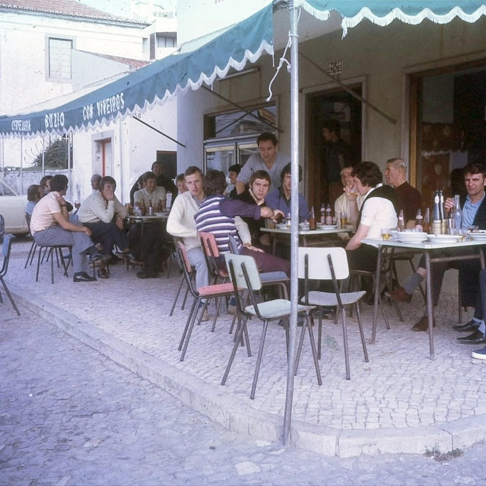
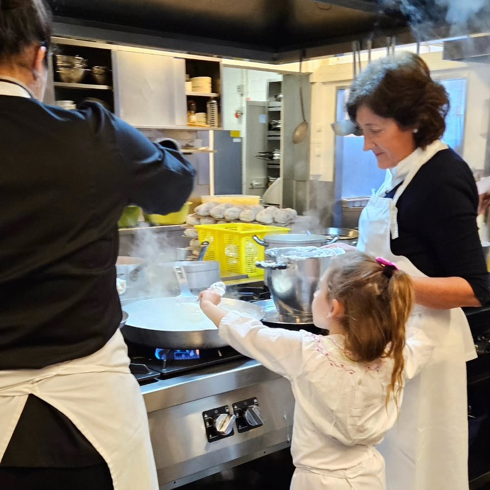
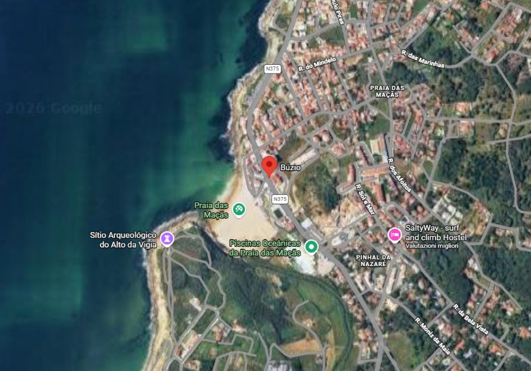

Onde o tempo abranda e o Atlântico se senta à mesa.
Where time slows down and the Atlantic joins the table.
O Buzio não é apenas um restaurante; é um marco vivo na Praia das Maçãs. Desde 1959, as nossas portas abrem-se para receber quem procura a pureza dos sabores do Atlântico, num compromisso inabalável com a frescura e o rigor.
Buzio is not just a restaurant; it's a living landmark in Praia das Maçãs. Since 1959, our doors have opened to welcome those seeking the purity of Atlantic flavors, with an unwavering commitment to freshness and excellence.
Nascido do sonho de servir o melhor que a costa portuguesa oferece, atravessámos décadas mantendo o ritual do serviço clássico e a hospitalidade que nos caracteriza como um refúgio para os amantes da boa mesa.
Born from the dream of serving the best that the Portuguese coast offers, we have crossed decades maintaining the ritual of classic service and the hospitality that defines us as a sanctuary for fine food lovers.


A história do Buzio escreve-se em família. Ao longo de mais de meio século, o conhecimento sobre as marés e o segredo da cozinha foram transmitidos como um bem precioso.
The history of Buzio is written in family. Over more than half a century, knowledge of the tides and kitchen secrets have been passed down like a precious treasure.
Hoje, a quarta geração assume o leme, preservando os métodos artesanais e o respeito absoluto pelo produto. É esta linhagem que garante que, em cada prato, se sinta a continuidade de uma dedicação que o tempo não apaga.
Today, the fourth generation takes the helm, preserving artisanal methods and absolute respect for the product. It is this lineage that ensures every dish reflects the continuity of a dedication that time cannot erase.
Garantia de frescura absoluta e seleção rigorosa.
Guarantee of absolute freshness and rigorous selection.
Peixe selvagem capturado por métodos sustentáveis.
Wild fish caught using sustainable methods.
Mais de 65 anos de dedicação à Praia das Maçãs.
Over 65 years of dedication to Praia das Maçãs.
Av. Eugène Levy 56, 2705-306 Colares
Praia das Maçãs, Sintra
Aberto todos os dias: 12:00 — 23:00
Open every day: 12:00 PM — 11:00 PM

geral@buzio.pt